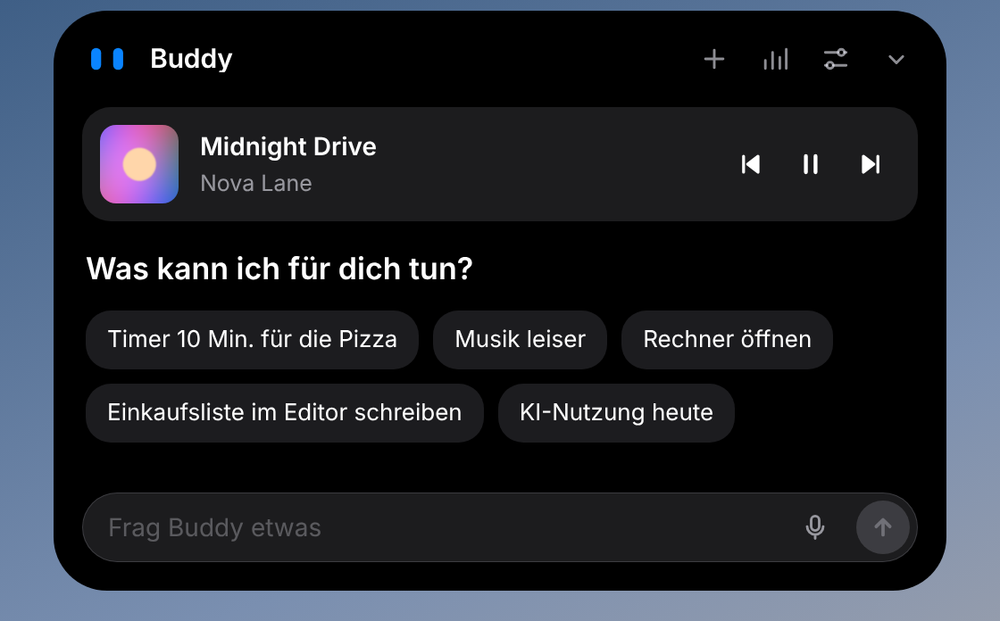
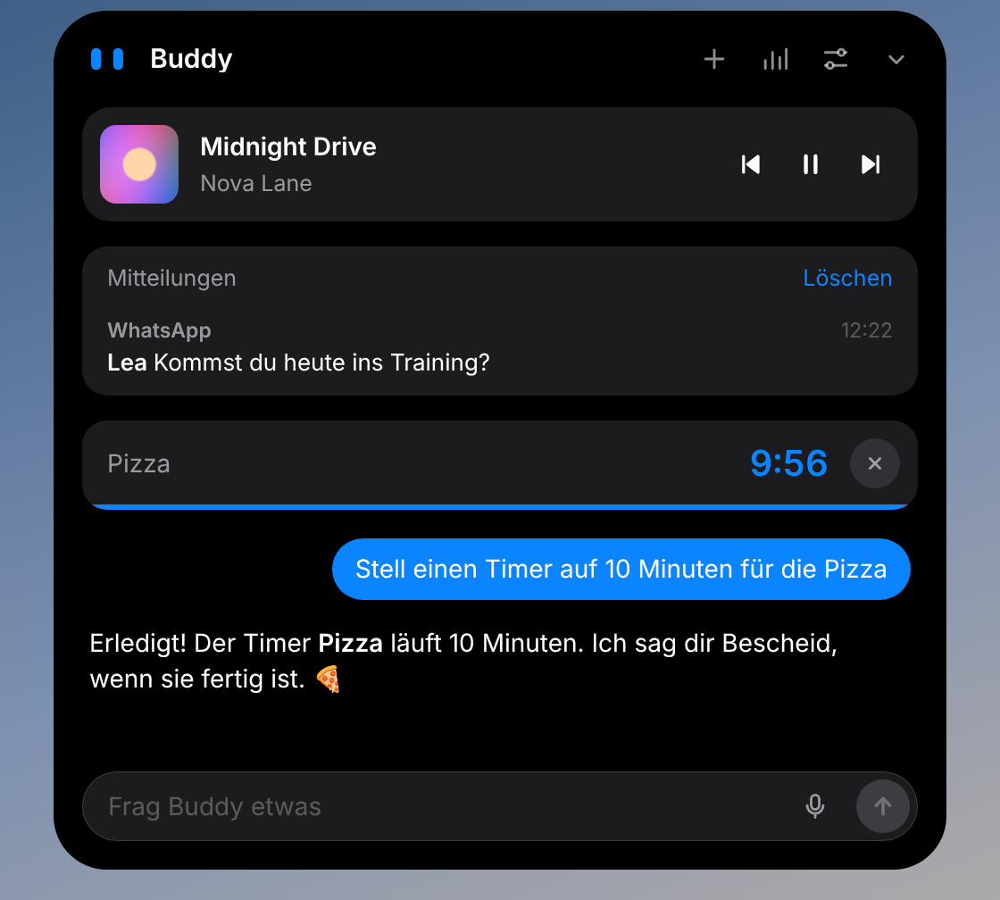
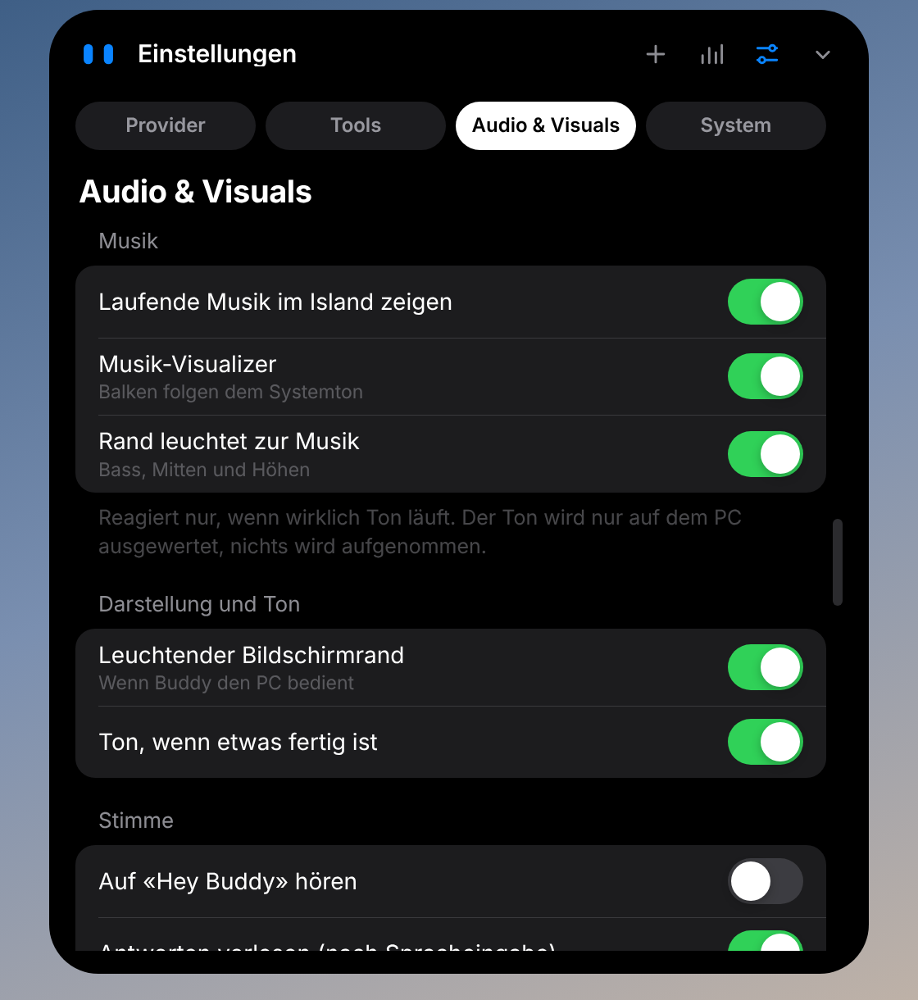

Gemini wieder startklar
Buddy nimmt automatisch die neuste Gemini-Version, die dein Konto anbietet. Modelle, die Google nicht mehr anbietet, überspringt er selbst.
Version 0.7.1 · Windows 10 & 11
Ein kleines Island oben in der Mitte von Windows: Fragen, Timer, Musik und Mitteilungen. Gratis mit lokaler KI oder mit Claude, OpenAI, Grok und Gemini.
Gratis · ca. 120 MB · ohne Konto, API-Key optional
Im Ruhezustand zeigt Buddy nur seine Augen.
Version 0.7.1
Buddy nimmt automatisch die neuste Gemini-Version, die dein Konto anbietet. Modelle, die Google nicht mehr anbietet, überspringt er selbst.
Die Balken folgen Bass, Mitten und Höhen des echten Tons. Ist Spotify nur offen oder pausiert, bleibt alles ruhig.
Der Bildschirmrand leuchtet in deiner Akzentfarbe um den ganzen Bildschirm, auch über der Taskleiste, und pulsiert zur Musik.
Egal wie lang die Unterhaltung wird: Das Eingabefeld bleibt unten, alles darüber scrollt für sich.
Modellnamen und Fehlercodes erscheinen nur noch auf Wunsch. Der Rand leuchtet nur, wenn Buddy wirklich länger deinen PC bedient.
Gratis und offline mit einem lokalen Modell oder mit deinem Key für Claude, OpenAI, Grok oder Gemini. Buddy wählt das passende Modell selbst.
Timer, Termine und Mitteilungen erscheinen oben im Island statt unten rechts.
Cover und Steuerung im Island, Balken und Bildschirmrand folgen dem echten Ton.
Auf Wunsch übernimmt Buddy Maus und Tastatur. Er fragt vorher und lässt sich jederzeit stoppen.



Klick oben auf «Für Windows herunterladen».
Doppelklick auf die Datei. Zeigt Windows «Der Computer wurde durch Windows geschützt», klick auf «Weitere Informationen» → «Trotzdem ausführen». Buddy ist (noch) nicht kostenpflichtig signiert.
Klick aufs Island und dann auf «Lokale KI einrichten»: Buddy wählt das passende Modell für deinen PC und lädt es. Lieber Claude, OpenAI, Grok oder Gemini? Füge in den Einstellungen unter «Provider & API-Keys» deinen Key ein.
Mit Strg + Umschalt + Leertaste öffnest du Buddy von überall. Updates kommen automatisch.
Buddy läuft nur auf deinem PC. Keine Werbung, keine Statistiken.
API-Keys und Kalender-Link liegen mit der Windows-Verschlüsselung nur auf deinem PC. Lokale Modelle schicken gar nichts weg.
Texte gehen nur an den KI-Anbieter, den du wählst. Bildschirmfotos nur bei der PC-Steuerung mit Claude, und nur nachdem du erlaubt hast.
Nein. Ohne Key läuft Buddy mit einem lokalen Modell gratis auf deinem PC. Ein Key von Claude, OpenAI, xAI (Grok) oder Google (Gemini) macht die Antworten klüger und ist nötig für die PC-Steuerung (nur Claude). Du bezahlst beim Anbieter nur, was du brauchst, meist wenige Rappen pro Unterhaltung.
In der Sprache von Windows. Die Oberfläche gibt es auf Deutsch, Englisch und Französisch, für andere Sprachen ist sie englisch, die Antworten kommen trotzdem in deiner Sprache. In den Einstellungen kannst du die Sprache auch fest wählen.
Programme ohne kostenpflichtiges Signatur-Zertifikat zeigen beim ersten Start eine SmartScreen-Warnung. Buddy ist ein Testprojekt und deshalb noch nicht signiert.
Nein. Im Spielmodus versteckt sich Buddy, sobald ein Spiel oder eine Vollbild-App läuft: keine Pop-ups, kein Ton, keine Steuerung.
Windows-Einstellungen → Apps → Buddy Island → Deinstallieren.